Lesespur: Das Auge – Lesespurgeschichte mit Rätseln (Klasse 7)

Lesespur: Das Blatt – Lesespurgeschichte mit Rätseln (Klasse 6)

Lesespur: Das Bodenprofil – Lesespurgeschichte mit Rätseln (Klasse 8)
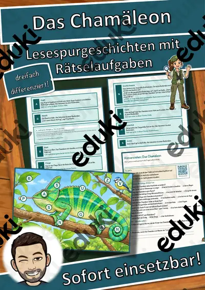
Lesespur: Das Chamäleon – Lesespurgeschichte mit Rätseln (Klasse 8)

Lesespur: Das Eichhörnchen – Lesespurgeschichte mit Rätseln (Klasse 5)
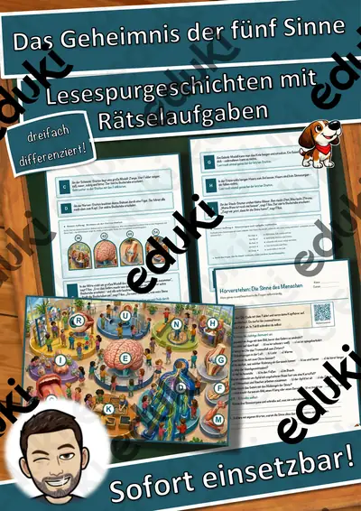
Lesespur: Das Geheimnis der fünf Sinne – Lesespurgeschichte mit Rätseln (Klasse 5)

Lesespur: Das Geheimnis des Teichs – Lesespurgeschichte mit Rätseln (Klasse 5)

Lesespur: Das Geheimnis des Waldes (Lebensraum Wald) – Lesespurgeschichte mit Rätseln (Klasse 5)

Lesespur: Das Geheimnis des Wattenmeers – Lesespurgeschichte mit Rätseln (Klasse 5)

Lesespur: Das Gehirn – Lesespurgeschichte mit Rätseln (Klasse 9)

Lesespur: Das Herz – Lesespurgeschichte mit Rätseln (Klasse 8)

Lesespur: Das Hormonsystem – Lesespurgeschichte mit Rätseln (Klasse 9)

Lesespur: Das Immunsystem – Lesespurgeschichte mit Rätseln (Klasse 8)

Lesespur: Das Kniegelenk – Lesespurgeschichte mit Rätseln (Klasse 8)

Lesespur: Das Korallenriff – Lesespurgeschichte mit Rätseln (Klasse 8)
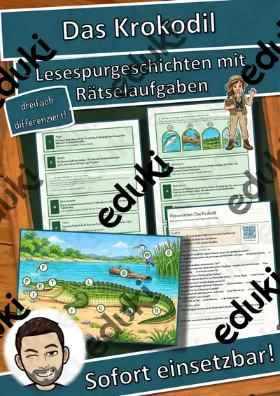
Lesespur: Das Krokodil – Lesespurgeschichte mit Rätseln (Klasse 8)
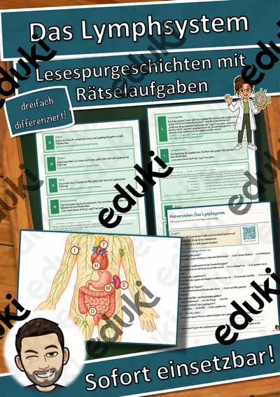
Lesespur: Das Lymphsystem – Lesespurgeschichte mit Rätseln (Klasse 9)

Lesespur: Das Mitochondrium – Lesespurgeschichte mit Rätseln (Klasse 9)

Lesespur: Das Moor – Lesespurgeschichte mit Rätseln (Klasse 8)

Lesespur: Das Naturkundemuseum – Lesespurgeschichte mit Rätseln (Klasse 5)
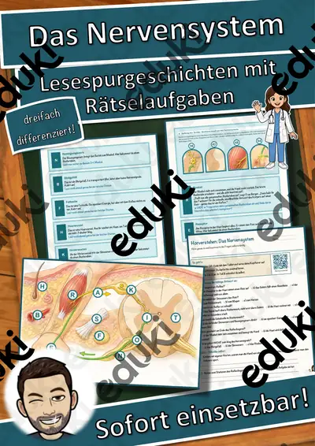
Lesespur: Das Nervensystem – Lesespurgeschichte mit Rätseln (Klasse 9)

Lesespur: Das Ohr – Lesespurgeschichte mit Rätseln (Klasse 7)

Lesespur: Das Pferd – Lesespurgeschichte mit Rätseln (Klasse 5)

Lesespur: Das Reh – Lesespurgeschichte mit Rätseln (Klasse 8)

Lesespur: Das Rückenmark – Lesespurgeschichte mit Rätseln (Klasse 9)

Lesespur: Das Schaf – Lesespurgeschichte mit Rätseln (Klasse 5)
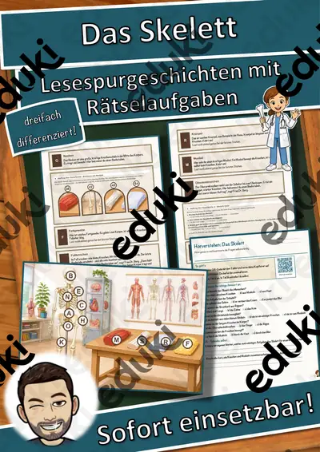
Lesespur: Das Skelett – Lesespurgeschichte mit Rätseln (Klasse 7)

Lesespur: Das Vogelei – Lesespurgeschichte mit Rätseln (Klasse 8)

Lesespur: Das Vogelfutterhaus – Lesespurgeschichte mit Rätseln (Klasse 5)

Lesespur: Das Wildschwein – Lesespurgeschichte mit Rätseln (Klasse 8)

Lesespur: Der Adler – Lesespurgeschichte mit Rätseln (Klasse 8)

Lesespur: Der Ameisenhaufen – Lesespurgeschichte mit Rätseln (Klasse 8)

Lesespur: Der Apfelbaum – Lesespurgeschichte mit Rätseln (Klasse 8)

Lesespur: Der Bauernhof – Lesespurgeschichte mit Rätseln (Klasse 7)

Lesespur: Der Baum – Lesespurgeschichte mit Rätseln (Klasse 6)

Lesespur: Der Baumstamm – Lesespurgeschichte mit Rätseln (Klasse 8)

Lesespur: Der Bergsee – Lesespurgeschichte mit Rätseln (Klasse 8)

Lesespur: Der Biber – Lesespurgeschichte mit Rätseln (Klasse 8)

Lesespur: Der Blutkreislauf – Lesespurgeschichte mit Rätseln (Klasse 7)

Lesespur: Der Bär – Lesespurgeschichte mit Rätseln (Klasse 8)
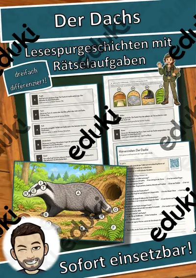
Lesespur: Der Dachs – Lesespurgeschichte mit Rätseln (Klasse 8)

Lesespur: Der Delfin – Lesespurgeschichte mit Rätseln (Klasse 8)

Lesespur: Der Dickdarm – Lesespurgeschichte mit Rätseln (Klasse 8)

Lesespur: Der Dünndarm – Lesespurgeschichte mit Rätseln (Klasse 8)
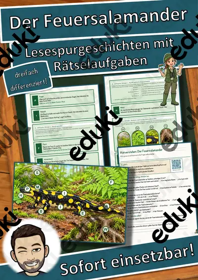
Lesespur: Der Feuersalamander – Lesespurgeschichte mit Rätseln (Klasse 8)
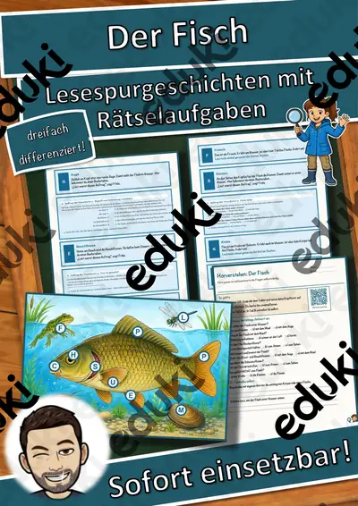
Lesespur: Der Fisch – Lesespurgeschichte mit Rätseln (Klasse 5)

Lesespur: Der Fliegenpilz – Lesespurgeschichte mit Rätseln (Klasse 8)
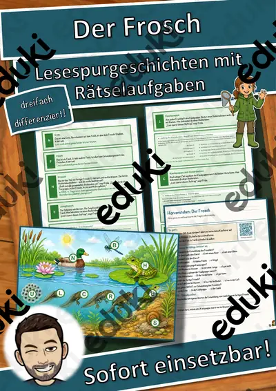
Lesespur: Der Frosch – Lesespurgeschichte mit Rätseln (Klasse 5)

Lesespur: Der Fuchs – Lesespurgeschichte mit Rätseln (Klasse 8)

Lesespur: Der Hai – Lesespurgeschichte mit Rätseln (Klasse 8)

Lesespur: Der Hamster – Lesespurgeschichte mit Rätseln (Klasse 8)

Lesespur: Der Hase – Lesespurgeschichte mit Rätseln (Klasse 8)

Lesespur: Der Hirsch – Lesespurgeschichte mit Rätseln (Klasse 8)
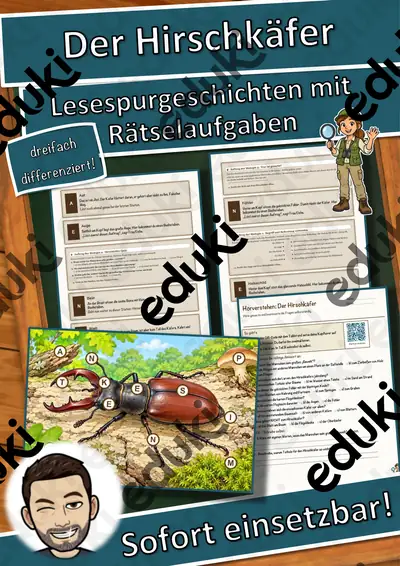
Lesespur: Der Hirschkäfer – Lesespurgeschichte mit Rätseln (Klasse 8)

Lesespur: Der Hummer – Lesespurgeschichte mit Rätseln (Klasse 8)

Lesespur: Der Hund: ein treues Haustier – Lesespurgeschichte mit Rätseln (Klasse 5)

Lesespur: Der Hund: unser treues Haustier – Lesespurgeschichte mit Rätseln (Klasse 5)

Lesespur: Der Igel – Lesespurgeschichte mit Rätseln (Klasse 6)
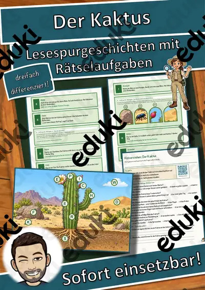
Lesespur: Der Kaktus – Lesespurgeschichte mit Rätseln (Klasse 8)

Lesespur: Der Kehlkopf – Lesespurgeschichte mit Rätseln (Klasse 8)

Lesespur: Der Knochen – Lesespurgeschichte mit Rätseln (Klasse 8)

Lesespur: Der Kompost – Lesespurgeschichte mit Rätseln (Klasse 8)

Lesespur: Der Komposthaufen – Lesespurgeschichte mit Rätseln (Klasse 8)

Lesespur: Der Kranich – Lesespurgeschichte mit Rätseln (Klasse 8)

Lesespur: Der Lachs – Lesespurgeschichte mit Rätseln (Klasse 8)

Lesespur: Der Luchs – Lesespurgeschichte mit Rätseln (Klasse 8)

Lesespur: Der Löwenzahn – Lesespurgeschichte mit Rätseln (Klasse 8)

Lesespur: Der Magen – Lesespurgeschichte mit Rätseln (Klasse 8)

Lesespur: Der Mais – Lesespurgeschichte mit Rätseln (Klasse 8)
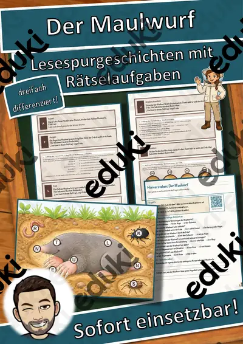
Lesespur: Der Maulwurf – Lesespurgeschichte mit Rätseln (Klasse 5)

Lesespur: Der Mischwald – Lesespurgeschichte mit Rätseln (Klasse 7)
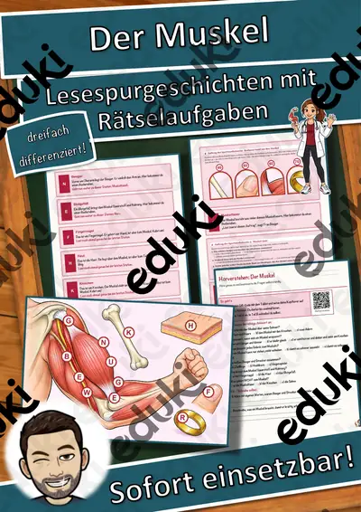
Lesespur: Der Muskel – Lesespurgeschichte mit Rätseln (Klasse 8)

Lesespur: Der Pilz – Lesespurgeschichte mit Rätseln (Klasse 5)

Lesespur: Der Pinguin – Lesespurgeschichte mit Rätseln (Klasse 8)

Lesespur: Der Regenwurm – Lesespurgeschichte mit Rätseln (Klasse 8)

Lesespur: Der Schädel – Lesespurgeschichte mit Rätseln (Klasse 8)

Lesespur: Der Specht – Lesespurgeschichte mit Rätseln (Klasse 5)

Lesespur: Der Storch – Lesespurgeschichte mit Rätseln (Klasse 8)

Lesespur: Der Tintenfisch – Lesespurgeschichte mit Rätseln (Klasse 8)

Lesespur: Der Vogel – Lesespurgeschichte mit Rätseln (Klasse 7)

Lesespur: Der Vogelzug – Lesespurgeschichte mit Rätseln (Klasse 7)

Lesespur: Der Weihnachtsstern: eine Pflanze aus Mexiko – Lesespurgeschichte mit Rätseln (Klasse 5)

Lesespur: Der Weizen – Lesespurgeschichte mit Rätseln (Klasse 8)

Lesespur: Der Winterschlaf – Lesespurgeschichte mit Rätseln (Klasse 7)

Lesespur: Der Wolf – Lesespurgeschichte mit Rätseln (Klasse 8)

Lesespur: Der Zahn – Lesespurgeschichte mit Rätseln (Klasse 8)

Lesespur: Der Zellkern – Lesespurgeschichte mit Rätseln (Klasse 9)

Lesespur: Die Ameise – Lesespurgeschichte mit Rätseln (Klasse 8)

Lesespur: Die Amsel – Lesespurgeschichte mit Rätseln (Klasse 8)
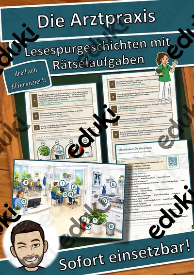
Lesespur: Die Arztpraxis: Ein Praktikum beim Arzt – Lesespurgeschichte mit Rätseln (Klasse 9)

Lesespur: Die Atmung – Lesespurgeschichte mit Rätseln (Klasse 7)

Lesespur: Die Bakterien – Lesespurgeschichte mit Rätseln (Klasse 8)
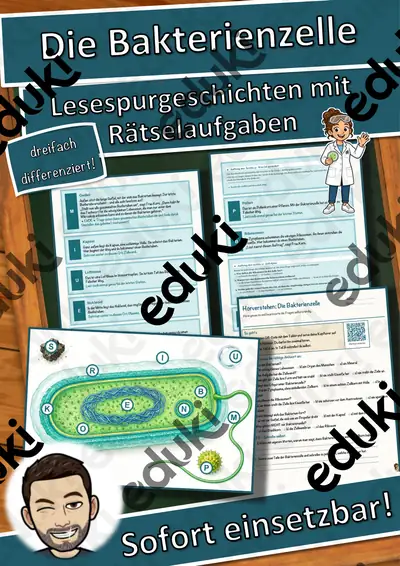
Lesespur: Die Bakterienzelle – Lesespurgeschichte mit Rätseln (Klasse 8)

Lesespur: Die Bauchspeicheldrüse – Lesespurgeschichte mit Rätseln (Klasse 8)

Lesespur: Die Bestäubung – Lesespurgeschichte mit Rätseln (Klasse 9)
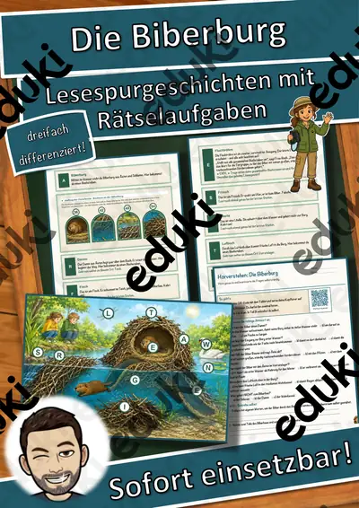
Lesespur: Die Biberburg – Lesespurgeschichte mit Rätseln (Klasse 8)
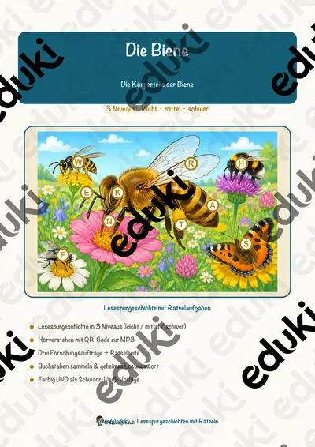
Lesespur: Die Biene – Lesespurgeschichte mit Rätseln (Klasse 5)

Lesespur: Die Biogasanlage – Lesespurgeschichte mit Rätseln (Klasse 9)

Lesespur: Die Blüte – Lesespurgeschichte mit Rätseln (Klasse 6)

Lesespur: Die Christrose: eine Blume blüht im Schnee – Lesespurgeschichte mit Rätseln (Klasse 6)

Lesespur: Die DNA – Lesespurgeschichte mit Rätseln (Klasse 9)

Lesespur: Die Eiche – Lesespurgeschichte mit Rätseln (Klasse 8)

Lesespur: Die Ente – Lesespurgeschichte mit Rätseln (Klasse 5)

Lesespur: Die Erdkröte – Lesespurgeschichte mit Rätseln (Klasse 8)
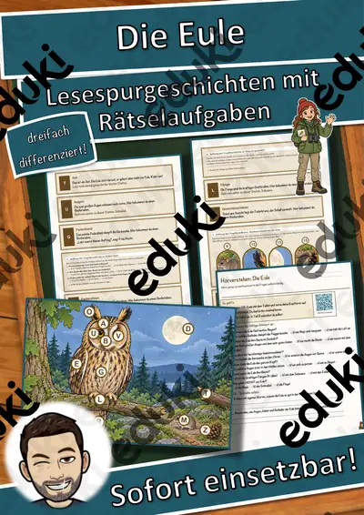
Lesespur: Die Eule – Lesespurgeschichte mit Rätseln (Klasse 8)
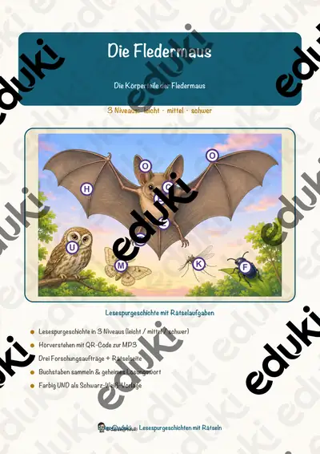
Lesespur: Die Fledermaus – Lesespurgeschichte mit Rätseln (Klasse 5)
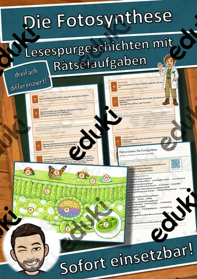
Lesespur: Die Fotosynthese – Lesespurgeschichte mit Rätseln (Klasse 8)
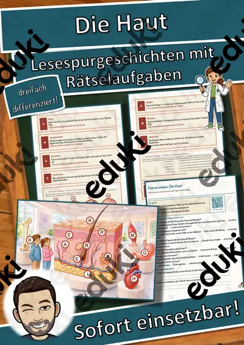
Lesespur: Die Haut – Lesespurgeschichte mit Rätseln (Klasse 8)
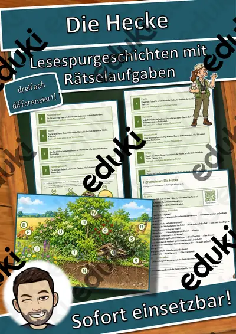
Lesespur: Die Hecke – Lesespurgeschichte mit Rätseln (Klasse 8)
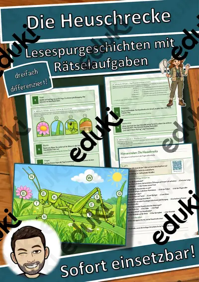
Lesespur: Die Heuschrecke – Lesespurgeschichte mit Rätseln (Klasse 8)
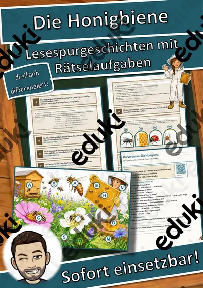
Lesespur: Die Honigbiene – Lesespurgeschichte mit Rätseln (Klasse 7)

Lesespur: Die Kartoffel – Lesespurgeschichte mit Rätseln (Klasse 5)

Lesespur: Die Kastanie – Lesespurgeschichte mit Rätseln (Klasse 5)

Lesespur: Die Kieme – Lesespurgeschichte mit Rätseln (Klasse 8)

Lesespur: Die Kläranlage – Lesespurgeschichte mit Rätseln (Klasse 8)

Lesespur: Die Kuh – Lesespurgeschichte mit Rätseln (Klasse 5)

Lesespur: Die Leber – Lesespurgeschichte mit Rätseln (Klasse 9)
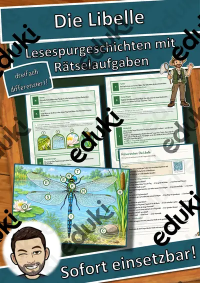
Lesespur: Die Libelle – Lesespurgeschichte mit Rätseln (Klasse 8)

Lesespur: Die Lunge – Lesespurgeschichte mit Rätseln (Klasse 8)

Lesespur: Die Mangrove – Lesespurgeschichte mit Rätseln (Klasse 8)

Lesespur: Die Muschel – Lesespurgeschichte mit Rätseln (Klasse 8)

Lesespur: Die Muskeln – Lesespurgeschichte mit Rätseln (Klasse 7)

Lesespur: Die Nahrungskette – Lesespurgeschichte mit Rätseln (Klasse 7)

Lesespur: Die Nase – Lesespurgeschichte mit Rätseln (Klasse 8)

Lesespur: Die Nervenzelle – Lesespurgeschichte mit Rätseln (Klasse 9)

Lesespur: Die Niere – Lesespurgeschichte mit Rätseln (Klasse 8)

Lesespur: Die Pflanze: Vom Samen zur Frucht – Lesespurgeschichte mit Rätseln (Klasse 5)

Lesespur: Die Pflanzenzelle – Lesespurgeschichte mit Rätseln (Klasse 8)

Lesespur: Die Schildkröte – Lesespurgeschichte mit Rätseln (Klasse 8)

Lesespur: Die Schlange – Lesespurgeschichte mit Rätseln (Klasse 7)

Lesespur: Die Schnecke – Lesespurgeschichte mit Rätseln (Klasse 5)

Lesespur: Die Sonnenblume – Lesespurgeschichte mit Rätseln (Klasse 8)

Lesespur: Die Spinne – Lesespurgeschichte mit Rätseln (Klasse 5)

Lesespur: Die Tierzelle – Lesespurgeschichte mit Rätseln (Klasse 8)

Lesespur: Die Tulpe – Lesespurgeschichte mit Rätseln (Klasse 8)

Lesespur: Die Umwelt-Detektive – Lesespurgeschichte mit Rätseln (Klasse 5)

Lesespur: Die Verdauung – Lesespurgeschichte mit Rätseln (Klasse 7)

Lesespur: Die Vererbung – Lesespurgeschichte mit Rätseln (Klasse 9)

Lesespur: Die Wirbelsäule – Lesespurgeschichte mit Rätseln (Klasse 8)

Lesespur: Die Wurzel – Lesespurgeschichte mit Rätseln (Klasse 8)

Lesespur: Die Zelle – Lesespurgeschichte mit Rätseln (Klasse 8)

Lesespur: Die Zunge – Lesespurgeschichte mit Rätseln (Klasse 8)

Lesespur: Die Zähne – Lesespurgeschichte mit Rätseln (Klasse 7)

Lesespur: Erste Hilfe bei Kälte: Unterkühlung und Erfrierungen – Lesespurgeschichte mit Rätseln (Klasse 8)

Lesespur: Gentechnik: Chancen und Risiken abwägen – Lesespurgeschichte mit Rätseln (Klasse 10)
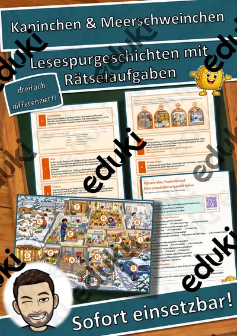
Lesespur: Kaninchen und Meerschweinchen artgerecht halten – Lesespurgeschichte mit Rätseln (Klasse 5)

Lesespur: Organspende: eine Entscheidung fürs Leben – Lesespurgeschichte mit Rätseln (Klasse 7)

Lesespur: Rauchen und Vapes: warum Nikotin abhängig macht – Lesespurgeschichte mit Rätseln (Klasse 7)
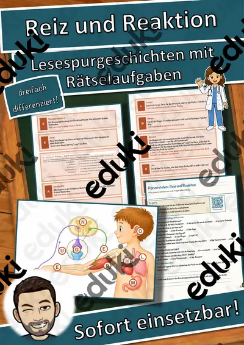
Lesespur: Reiz und Reaktion – Lesespurgeschichte mit Rätseln (Klasse 9)

Lesespur: Winterblues: warum uns im Winter das Licht fehlt – Lesespurgeschichte mit Rätseln (Klasse 8)

Materialpaket Advent für die 5. Klasse: 3 Lesespurgeschichten mit Rätselaufgaben (Weihnachtsstern, Plätzchen backen, Handnähen)

Materialpaket Lesespurgeschichten Biologie Klasse 5 – Pflanzen, Lebensräume und Sinne: 8 Lesespuren mit Rätselaufgaben, dreifach differenziert

Materialpaket Lesespurgeschichten Biologie Klasse 5 – Tiere: 17 Lesespuren mit Rätselaufgaben, dreifach differenziert

Materialpaket Lesespurgeschichten Biologie Klasse 6: 4 Lesespuren mit Rätselaufgaben, dreifach differenziert

Materialpaket Lesespurgeschichten Biologie Klasse 7 – Der Mensch und seine Gesundheit: 10 Lesespuren mit Rätselaufgaben, dreifach differenziert

Materialpaket Lesespurgeschichten Biologie Klasse 7 – Tiere und Lebensräume: 7 Lesespuren mit Rätselaufgaben, dreifach differenziert

Materialpaket Lesespurgeschichten Biologie Klasse 8 – Der Mensch: 18 Lesespuren mit Rätselaufgaben, dreifach differenziert

Materialpaket Lesespurgeschichten Biologie Klasse 8 – Lebensräume und Ökologie: 11 Lesespuren mit Rätselaufgaben, dreifach differenziert

Materialpaket Lesespurgeschichten Biologie Klasse 8 – Pflanzen und Pilze: 12 Lesespuren mit Rätselaufgaben, dreifach differenziert

Materialpaket Lesespurgeschichten Biologie Klasse 8 – Tiere: Säugetiere und Vögel: 19 Lesespuren mit Rätselaufgaben, dreifach differenziert
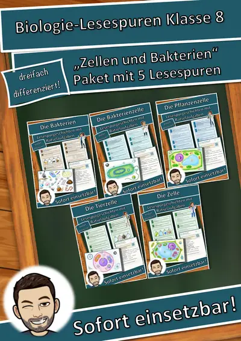
Materialpaket Lesespurgeschichten Biologie Klasse 8 – Zellen und Bakterien: 5 Lesespuren mit Rätselaufgaben, dreifach differenziert

Materialpaket Winter und Advent für die 7. Klasse: 10 Lesespurgeschichten mit Rätselaufgaben fächerübergreifend (Weihnachtsoratorium, Südpol, Eishockey & mehr)
Lesespurgeschichten im Fach Biologie
Im Biologieunterricht führt die Lesespur durch einen Körper, ein Ökosystem oder einen Kreislauf. Die Stationen sind die Teile des Systems, und die Reihenfolge ist keine Erfindung: Wer die Wege vertauscht, landet in einer Sackgasse. So wird nebenbei geübt, was in Biologie zählt – Abläufe in der richtigen Ordnung zu erfassen.
Jede Geschichte liegt in drei Niveaustufen vor, die sich in Textlänge, Satzbau und Aufgabenanspruch unterscheiden. Weg, Stationen und Lösungswort bleiben gleich, sodass alle Fassungen gleichzeitig in einer Klasse laufen können.
Themen auf dieser Seite
Beispiele aus dieser Sammlung: Lesespur: Die Sonnenblume · Lesespur: Der Komposthaufen · Lesespur: Das Lymphsystem · Lesespur: Die Vererbung · Lesespur: Der Hund: ein treues Haustier · Lesespur: Die Kieme · Lesespur: Das Eichhörnchen · Materialpaket Lesespurgeschichten Biologie Klasse 8.